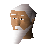

Wizard

| Config name | wizardadventuterpg |
| NPC id | 652 |
| Combat level | hidden |
| Options | Talk-to |
| Wander range | 5 tiles from spawn |
| Area folder | area_lumbridge |
| Defined in | scripts/areas/area_lumbridge/configs/lumbridge.npc |
Wizard
He looks kind of puny...
Show all 1 spawn on the world map → Open in knowledge graph →
Locations
| Area | Coordinates | Level | Count | Map |
|---|---|---|---|---|
| Jail | 3148, 3200 | 0 | 1 | view |
Dialogue
PlayerHello!
WizardBlast! I was in the middle of my magical meditations - now you've gone and spoiled it! Why did you have to interrupt me?
PlayerOh, sorry. I was just trying to be friendly.
WizardNever mind! Good day to you, sir.
PlayerWhy are all of you standing around here?
WizardHahaha you dare talk to a mighty wizard such as myself? I bet you can't even cast windstrike yet amateur!
Player...You're an idiot.
PlayerFound that leprechaun yet?
WizardHahaha go away amateur! You're not worthy of joining our great group!
Player...right.
WizardHahaha you're such an amateur!
WizardGo away and play with some cabbage amateur!
Player...right.
Referenced in scripts
scripts/areas/area_lumbridge/scripts/wizard_zanaris.rs2